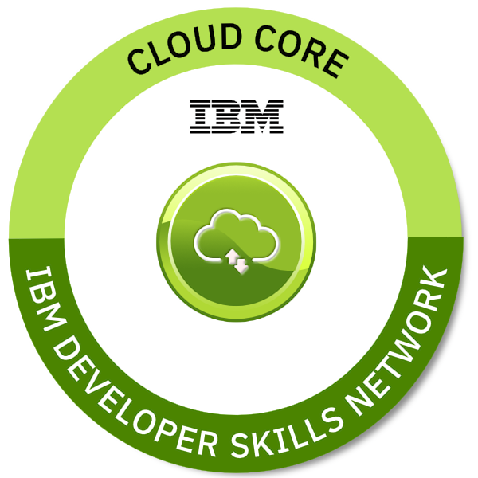
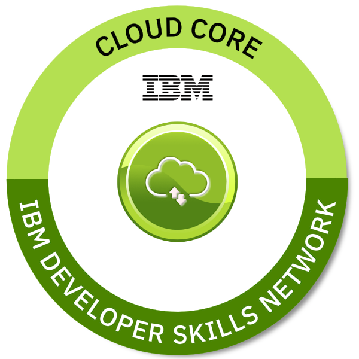
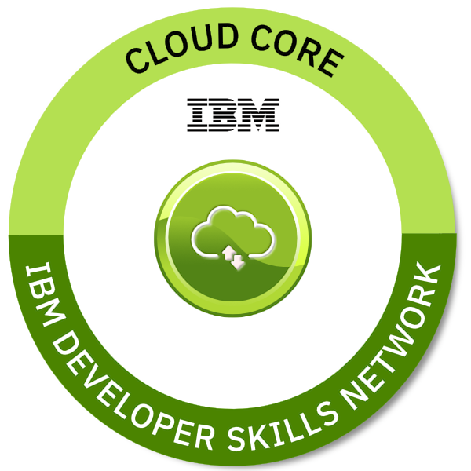
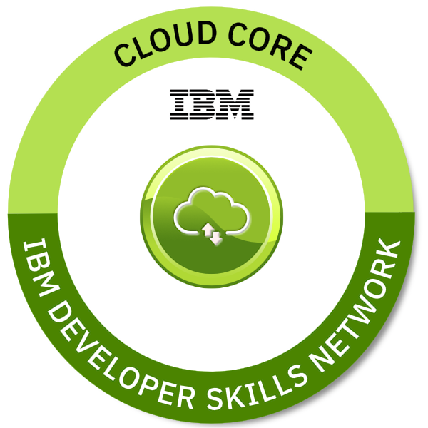

 



Indian Council of Agriculture Research-Indian Institute of Oilseeds Research, Hyderabad, India– Intern Web Application Development
| Project 1 | Project 2 | Project 3 |
|---|---|---|
| Oilseeds Pests and Diseases Image Repository System | Oilseeds Statistics Compendia | Deep Learning Classifier |
Neon Flake, Hyderabad, India – Developer
AMITA - Pearlss4development, Hyderabad, India – Web Developer
KL University Hyderabad, Hyderabad, India– Website Admin
Web ShogundLee, Singapore– Data Streaming
Depression is a common mental health disease that requires early identification for successful treatment. Through voice analysis, this study aims to create an automated framework using convolutional neural networks (CNN) for the early detection and prediction of depression. The study looks at different types of depression, causes of sadness, ways to prevent it, and the ability of automated speech analysis to identify depressive symptoms. A thorough examination of the optimised multi-channel weighted speech classification (OMCWSC) system is also provided, emphasising its efficacy in foretelling adolescent depression. The results highlight the importance of acoustic speech characteristics and the promising potential of deep learning methods in depression analysis.
Read More